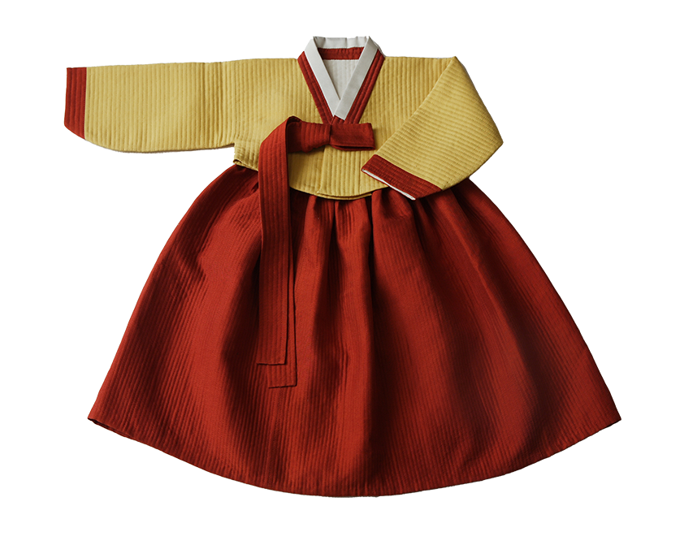

누비장
누비 기법으로 바느질을 하는 기술

제작과정
누비를 할 때 제일 먼저 하는 일은 옷감에 줄을 치는 일로, 천의 조직에 따라 줄을 그어 다림질로 꺾기도 하고 올을 튀겨서 하기도 한다. 근래에는 직물을 제직할 때 줄을 넣어서 제직하는 방법이 고안되기도 하였다. 옷에는 홈질·감침질·숨뜨기·뒤땀질·상침 등의 바느질법을 사용한다. 누빌 때는 홈질을, 누빈 다음 천과 천을 붙여야 하는 경우 겉천에는 감침질을, 안감을 붙일 때는 숨뜨기를 사용하며, 어떤 선을 고정시킬 때나 박음선을 모양으로 사용할 때는 상침을 하고, 처음 시작할 때와 마무리 할 때는 뒤땀질을 사용한다.
사용재료
주로 명주를 많이 사용하는데 명주는 입어서 육안으로 자연스럽고 아름다우며 몸에 닿으면 천의 질감이 부드럽고 따뜻하기 때문이다.
특징
우리나라의 전통 손누비는 세계 유일한 재봉법으로 그 정교함과 작품성이 자수를 능가하는 예술품으로 평가받기에 충분하나, 지금에 와서는 시간이 많이 걸리고 상품성이 떨어진다는 이유로 사라져가고 있다.
전승자
| 보유구분 | 이름 | 성별 | 기예능 | 지역 | 인정일 |
|---|---|---|---|---|---|
| 보유자 | 김해자(金海子) | 여 | 누비 | 경북 | 1996-12-10 |
| 전승교육사 | 유선희(柳善喜) | 여 | 누비 | 경기 | 2020-12-10 |
소재지
경북